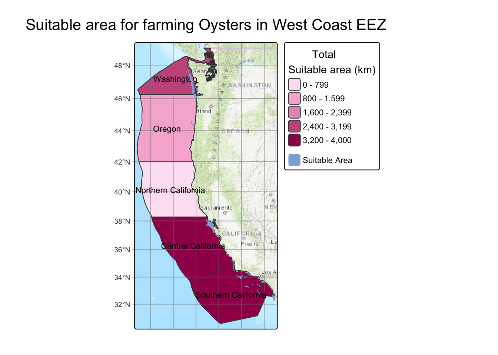
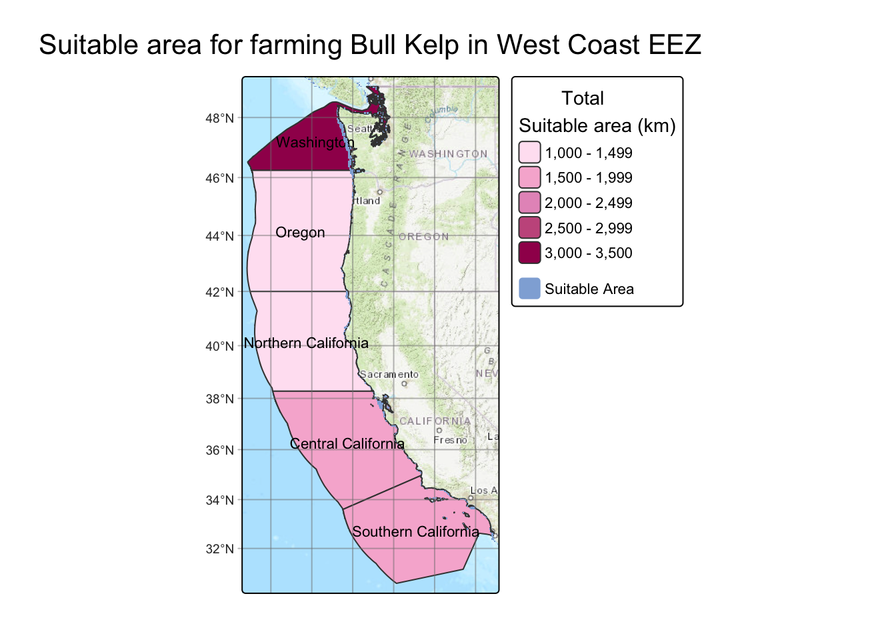

Code
pacman::p_load('tidyverse',
'sf',
'here',
'tmap',
'kableExtra',
'patchwork',
'stars',
'terra')
Exclusive economic zones (EEZ’s) are areas of the ocean, generally extending 200 nautical miles (230 miles) beyond a nation’s territorial sea, within which a coastal nation has jurisdiction over both living and nonliving resources (N.O. Exploration 2025). With their natural boundary, these areas sustain millions of people worldwide. The management of these EEZ’s is crucial for both economic and ecological prosperity.
In this project we are going to map where, along the North Pacific EEZ, is best for farming a variety of species in an attempt to determine where resources could be allocated. We will accomplish this by first showing the generalized workflow, and then showing a function which completes the workflow for a list of species.
pacman::p_load('tidyverse',
'sf',
'here',
'tmap',
'kableExtra',
'patchwork',
'stars',
'terra')The surface temperature raster contains global surface temperatures provided by NOAA. Because it represents only surface conditions, relying on this raster may skew results for species that primarily occupy deeper waters.
sst_2008 <- rast(here('posts', 'aquaculture_and_eezs','data',
'average_annual_sst_2008.tif'))
sst_2009 <- rast(here('posts', 'aquaculture_and_eezs','data',
'average_annual_sst_2009.tif'))
sst_2010 <- rast(here('posts', 'aquaculture_and_eezs', 'data',
'average_annual_sst_2010.tif'))
sst_2011 <- rast(here('posts', 'aquaculture_and_eezs','data',
'average_annual_sst_2011.tif'))
sst_2012 <- rast(here('posts', 'aquaculture_and_eezs', 'data',
'average_annual_sst_2012.tif'))The bathymetry raster data are sourced from the GEBCO Bathymetric Compilation Group (2025), which provides global seafloor depth information. From: (GEBCO Bathymetric Compilation Group 2025 2025)
bathy <- rast(here('posts', 'aquaculture_and_eezs', 'data','depth.tif')) %>%
project("EPSG:4326") # Coerce into correct CRSThe EEZ layer contains global Exclusive Economic Zone vector boundaries provided by Marine Regions (v12). From: (Flanders Marine Institute (VLIZ) 2025)
eez <- st_read(here('posts', 'aquaculture_and_eezs','data',
'wc_regions_clean.shp'), quiet = TRUE) %>%
st_transform("EPSG:4326") # STARS OBJECTHere we find the mean of the stacked surface temperature raster between 2008 and 2012
# Stacked raster
stacked_sst <- c(sst_2008, sst_2009, sst_2010, sst_2011, sst_2012) %>% # Here we stack our temperatures and then transform crs
project("EPSG:4326")
# Take mean of stacked raster and transform from Kelvin to Celsius
mean_sst <- mean(stacked_sst) - 273.15 Next we make sure our depth data follows the same coordinate reference system, so they can be projected onto the same plot.
# First we need to assure this data is in the same crs as sst
depth_projected <- project(bathy, mean_sst) # Project the crs of mean sst on depth
crs(depth_projected) == crs(mean_sst)[1] TRUE# We are going to crop the depth raster to the eez
depth_cropped <- crop(depth_projected, mean_sst)
# And resample to make sure our pixel sizes match
depth_resampled <- resample(depth_projected, mean_sst)This is the point in the workflow where we are ready for reclassification, where a function may come into play. To highlight the workflow of the function, I will be showing one example of the analysis outside the function. We are going to focus on Oysters for this first example. We need to reclassify both temperature and depth for oysters, which enjoy depth between -70 meters and 0 meters and temperatures between 11 and 30 degrees Celsius.
rcl_depth <- matrix(c(-Inf, -70, 0, # Anything below 70 m becomes a 0
-70, 0, 1, # Between 70 and 0 becomes 1
0, Inf, 0), # And above 0 becomes a 0
nrow = 3,
byrow = TRUE)
rcl_temp <- matrix(c(-Inf, 11, 0, # Below 11 degrees becomes 0
11, 30, 1, # Between 11 and 30 becomes 1
30, Inf, 0), # Above 30 becomes 0
nrow =3,
byrow = TRUE)
# Apply those matrices
depth_rcl <- classify(depth_resampled, rcl_depth)
sst_rcl <- classify(mean_sst, rcl_temp)We want to keep where both sst and depth equal one, so we can multiply the two rasters.
suitable_cells <- sst_rcl * depth_rcl
# And make all 0's NA
suitable_cells[suitable_cells == 0] <- NA
# Finally, since we only have ones, change that to suitable
names(suitable_cells) <- 'Suitable'Now we want to see the area of the suitable cells, which we can get by multiplying suitable_cells and the cellSize of each cell
area_raster <- suitable_cells * cellSize(suitable_cells, unit = 'km') Next we extract where that area touches our EEZ.
area_extracted <- terra::extract(area_raster,
eez,
touches = TRUE) %>%
group_by(ID) %>% # Then we group_by and summarise the total suitable area per eez region
summarise(suitable_area = sum(Suitable, na.rm = TRUE)) %>%
mutate(rgn = eez$rgn)For plotting we want to join the EEZ with the extracted area
# Lastly we want to left join to preserve the area information of each eez region
region_suitable_area <- left_join(x = eez,
y = area_extracted,
by = "rgn") %>%
dplyr::select(-ID) # Get rid of ID columnNow we have our final mapping data frame and can build our map
tm_basemap("Esri.WorldTopoMap")+# I found this basemap fit the best
tm_shape(region_suitable_area)+
tm_polygons(fill = 'suitable_area',
fill.scale = tm_scale(values = c("#FFE4F2",
"#F7B5D4",
"#E698C3",
"#C75A8C",
"#A0185A"),
breaks = c(0,
800, # Specify breaks
1600,
2400,
3200,
4000)),
fill.legend = tm_legend( ' Total \nSuitable area (km)'))+ # The blank space makes 'Total' centered
tm_title(text = paste('Suitable area for farming Oysters in West Coast EEZ'),
position = tm_pos_out("center", "top", pos.h = "center"))+ # Add title and position in center
tm_layout(component.autoscale = FALSE)+ # Autoscale makes our title tiny so we turn it off
tm_graticules(alpha = .5)+ # Add graticules (lighter)
tm_text('rgn', size = .7)+ # This adds the region name on each polygon centroid
tm_shape(suitable_cells)+ # I want to add the visual representation of where the suitable area is
tm_raster(col = 'Suitable',
col.scale = tm_scale(values = '#90AFDA', # This color is also part of my palette
labels = 'Suitable Area'), # In place of a title we will be specific with our legend text
col.legend = tm_legend(title = "")) # No need for a legend title with a single raster variable
I also want to be able to see a table of our exact suitable area in each region so we can use kable
tbl_data <- region_suitable_area %>%
st_drop_geometry() %>%
select(-rgn_key, -rgn_id, -area_m2)
n_rows <- nrow(tbl_data)
tbl_data %>%
kbl(
col.names = c('Region', 'Total Area (Km2)', 'Suitable Area (Km2)'),
digits = 3,
caption = "Suitable Area for Farming Oysters",
format = "html"
) %>%
kable_styling(
bootstrap_options = c("striped", "hover", "condensed", "responsive"),
full_width = FALSE,
position = "center",
font_size = 14
) %>%
row_spec(
0,
bold = TRUE,
color = "white",
background = "#A0185A"
) %>%
row_spec(
1:n_rows,
color = "black",
background = "#FFC4EB"
)| Region | Total Area (Km2) | Suitable Area (Km2) |
|---|---|---|
| Oregon | 179994.06 | 1147.883 |
| Northern California | 164378.81 | 194.126 |
| Central California | 202738.33 | 3673.514 |
| Southern California | 206860.78 | 3259.485 |
| Washington | 66898.31 | 2524.804 |
From this map and table we can see that Oysters would be better farmed in Central and Southern California as well as Washington, but less so in Northern California and Oregon. This is more likely due to the depth range instead of the temperature range, due to surface temperatures in Washington and Southern California being wildly different.
Now that I have my workflow solidified I can turn it into a function, so with just the species name it can output a map. I am doing this in an attempt to generalize the workflow so theoretically any species could be farmed. The resources for this data will be cited in the references section. One limitation is not all of these species have hard depth and temperature limits due to lack of studying, however for our purposes these values work well.
#' Map EEZ
#' Make a map of a suitable area of a species in west coast EEZ's
#' @param species
#' The name of your species, MUST be wrapped AND Uppercase eg: ('Pacific Oyster')
#' @returnsA list containing:
#' - $map : tmap object
#' - $table : kable table
#' @export
#' @examples
#'
map_eez <- function(species){
species_dict <- list(
# -----------------------------
# Molluscs
# -----------------------------
"Pacific Oyster" = list(
t_lwr = 11, t_upr = 30,
d_lower = 70, d_upr = 0
),
"Olympia Oyster" = list(
t_lwr = 8, t_upr = 20,
d_lower = 40, d_upr = 0
),
"Geoduck" = list(
t_lwr = 5, t_upr = 18,
d_lower = 100, d_upr = 5
),
"Razor Clam" = list(
t_lwr = 5, t_upr = 17,
d_lower = 20, d_upr = 0
),
"Blue Mussel" = list(
t_lwr = 5, t_upr = 20,
d_lower = 30, d_upr = 0
),
"Scallop" = list(
t_lwr = 8, t_upr = 20,
d_lower = 50, d_upr = 0
),
"Red Abalone" = list(
t_lwr = 8, t_upr = 20,
d_lower = 24, d_upr = 0
),
"California Mussel" = list(
t_lwr = 5, t_upr = 22,
d_lower = 100, d_upr = 0
),
# -----------------------------
# KELP + SEAWEEDS
# -----------------------------
"Bull Kelp" = list(
t_lwr = 10, t_upr = 18,
d_lower = 40, d_upr = 0
),
"Giant Kelp" = list(
t_lwr = 6, t_upr = 20,
d_lower = 30, d_upr = 0
),
"Sugar Kelp" = list(
t_lwr = -2, t_upr = 15,
d_lower = 50, d_upr = 1
),
"Dulse" = list(
t_lwr = 5, t_upr = 15,
d_lower = 10, d_upr = 0
),
"Sea Lettuce" = list(
t_lwr = 5, t_upr = 25,
d_lower = 10, d_upr = 0
),
"Winged Kelp" = list(
t_lwr = 2, t_upr = 15,
d_lower = 40, d_upr = 0
),
"Pyropia (Nori)" = list(
t_lwr = 5, t_upr = 15,
d_lower = 10, d_upr = 0
),
# -----------------------------
# ECHINODERMS (URCHINS)
# -----------------------------
"Green Sea Urchin" = list(
t_lwr = 0, t_upr = 15,
d_lower = 200, d_upr = 0
),
"Red Sea Urchin" = list(
t_lwr = 5, t_upr = 20,
d_lower = 100, d_upr = 3
),
# -----------------------------
# FINFISH
# -----------------------------
"Chinook Salmon" = list(
t_lwr = 8, t_upr = 14,
d_lower = 200, d_upr = 0
),
"Coho Salmon" = list(
t_lwr = 7, t_upr = 14,
d_lower = 150, d_upr = 0
),
"Steelhead Trout" = list(
t_lwr = 7, t_upr = 17,
d_lower = 100, d_upr = 0
),
"Pacific Halibut" = list(
t_lwr = 3, t_upr = 12,
d_lower = 450, d_upr = 20
),
"Sablefish" = list(
t_lwr = 4, t_upr = 12,
d_lower = 1500, d_upr = 50
),
"Pacific Sardine" = list(
t_lwr = 12, t_upr = 20,
d_lower = 0, d_upr = 50
),
"Northern Anchovy" = list(
t_lwr = 12, t_upr = 20,
d_lower = 0, d_upr = 50
),
"California Halibut" = list(
t_lwr = 8, t_upr = 16,
d_lower = 183, d_upr = 0
),
"Rainbow Trout" = list(
t_lwr = 4, t_upr = 18,
d_lower = 200, d_upr = 0
),
"California Yellowtail" = list(
t_lwr = 18, t_upr = 24,
d_lower = 150, d_upr = 5
),
# -----------------------------
# Arthropods
# -----------------------------
"Dungeness Crab" = list(
t_lwr = 7, t_upr = 18,
d_lower = 100, d_upr = 0
),
"Spiny Lobster" = list(
t_lwr = 12, t_upr = 24,
d_lower = 150, d_upr = 0
)
)
# Extract parameters from the dictionary
params <- species_dict[[species]]
if (species == "list") {
return(names(species_dict))
}
if (is.null(params)) stop("Species not found in dictionary. Check spelling.")
# Access individual values
t_lwr <- params$t_lwr
t_upr <- params$t_upr
d_lower <- params$d_lower
d_upr <- params$d_upr
# Reclassification matrices
rcl_depth <- matrix(c(-Inf, -d_lower, 0, # Use variables like values
-d_lower, -d_upr, 1,
-d_upr, Inf, 0),
nrow = 3,
byrow = TRUE)
rcl_temp <- matrix(c(-Inf, t_lwr, 0,
t_lwr, t_upr, 1,
t_upr, Inf, 0),
nrow =3,
byrow = TRUE)
# Reclassify
depth_rcl <- classify(depth_resampled, rcl_depth)
sst_rcl <- classify(mean_sst, rcl_temp)
# Calculate suitable cells
suitable_cells <- sst_rcl * depth_rcl
suitable_cells[suitable_cells == 0] <- NA
names(suitable_cells) <- 'Suitable'
# Calculate area of suitable cells
area_raster <- suitable_cells * cellSize(suitable_cells, unit = 'km')
# Extract suitable areas
area_extracted <- terra::extract(area_raster,
eez,
touches = TRUE) %>%
group_by(ID) %>%
summarise(suitable_area = sum(Suitable, na.rm = TRUE)) %>%
mutate(rgn = eez$rgn)
# Create geodf with suitable area and eez area
region_suitable_area <- left_join(x = eez,
y = area_extracted,
by = "rgn") %>%
select(-ID)
# Create map
map <- tm_basemap("Esri.WorldTopoMap")+
tm_shape(region_suitable_area)+
tm_polygons(fill = 'suitable_area',
fill.scale = tm_scale(values = c("#FFE4F2",
"#F7B5D4",
"#E698C3",
"#C75A8C",
"#A0185A"),
n = 5), # Set 5 breaks
fill.legend = tm_legend( ' Total \nSuitable area (km)'))+
tm_title(text = paste('Suitable area for farming', species, 'in West Coast EEZ'), position = tm_pos_out("center", "top", pos.h = "center"))+ # Paste allows us to manipulate the title of the plot
tm_layout(component.autoscale = FALSE)+
tm_graticules(alpha = .5)+
tm_text('rgn', size = .7)+
tm_shape(suitable_cells)+
tm_raster(col = 'Suitable',
col.scale = tm_scale(values = '#90AFDA',
labels = 'Suitable Area'),
col.legend = tm_legend(title = ""))
# Create table
tbl_data <- region_suitable_area %>%
st_drop_geometry() %>%
select(-rgn_key, -rgn_id, -area_m2)
n_rows <- nrow(tbl_data)
table <- tbl_data %>%
kbl(
col.names = c('Region', 'Total Area (Km2)', 'Suitable Area (Km2)'),
digits = 3,
caption = paste('EEZ region suitable area for farming', species),
format = "html"
) %>%
kable_styling(
bootstrap_options = c("striped", "hover", "condensed", "responsive"),
full_width = FALSE,
position = "center",
font_size = 14
) %>%
row_spec(
0,
bold = TRUE,
color = "white",
background = "#A0185A"
) %>%
row_spec(
1:n_rows,
color = "black",
background = "#FFC4EB"
)
return(list( # Make a list of our map and table so they can be called with a buck
map = map,
table = table
))
}Now we can call the function for any species in our species list
To know species options you can run map_eez('list')
map_eez('list') [1] "Pacific Oyster" "Olympia Oyster" "Geoduck"
[4] "Razor Clam" "Blue Mussel" "Scallop"
[7] "Red Abalone" "California Mussel" "Bull Kelp"
[10] "Giant Kelp" "Sugar Kelp" "Dulse"
[13] "Sea Lettuce" "Winged Kelp" "Pyropia (Nori)"
[16] "Green Sea Urchin" "Red Sea Urchin" "Chinook Salmon"
[19] "Coho Salmon" "Steelhead Trout" "Pacific Halibut"
[22] "Sablefish" "Pacific Sardine" "Northern Anchovy"
[25] "California Halibut" "Rainbow Trout" "California Yellowtail"
[28] "Dungeness Crab" "Spiny Lobster" Now we can call the function with any species from the list we find interesting, in this case Bull Kelp. I chose Bull Kelp due to it starting to be grown on the west coast (N. Fisheries 2025) as well as it growing incredibly quickly, up to 10 inches per day (S. Society 2025). Furthermore Bull Kelp forests have been receding out of Northern California, and I wanted to see if this map yielded similar results (V. Authors 2023).
bull_kelp <- map_eez('Bull Kelp')Now we can call the map to see the amount of area in each region suitable for farming Bull Kelp as well as where in the regions is suitable for farming the Kelp.
bull_kelp$map
Now we call the table showing the amount of area in each region suitable for farming Bull Kelp.
bull_kelp$table| Region | Total Area (Km2) | Suitable Area (Km2) |
|---|---|---|
| Oregon | 179994.06 | 1065.055 |
| Northern California | 164378.81 | 1023.031 |
| Central California | 202738.33 | 1674.401 |
| Southern California | 206860.78 | 1622.344 |
| Washington | 66898.31 | 3246.458 |
This map is very close to what I expected, with the highest area for possible farming being in Washington. Where it differences from what I would expect is in central and Southern California which is generally too warm to find Bull Kelp. This could be attributed to the use of mean surface temperature, instead of maximum. This is because when Bull Kelp propagate, their spores will not exit in temperatures above 18 degrees, so any temperature above that is going to cause them not to be able to recruit (and they don’t have the luxury to move to cooler waters)(B.L. Weigel, S.L. Small, H.D. Berry, and M.N. Dethier 07/27/2023).
This project is a small example of how easy it can be to work with publicly available temperature and depth data. Even with a few limitations—like Bull Kelp’s actual temperature range compared to the surface-temperature inputs—I’m still pretty happy with how realistic the results are for identifying potential aquaculture spots. The code ended up being really modular too, which means I can keep adding species or tweaking their ranges as new info comes out. And honestly, that’s what excites me most: this could grow into a much more complete tool over time, especially if I layer in more environmental variables or species traits. For now, though, it feels like a solid starting point and a fun way to blend data, ecology, and mapping into something genuinely useful.
| Species | Citation |
|---|---|
| Pacific Razor Clam | O.S.M. Program ( 2025) |
| Blue Mussel | NOAA Aquaculture ( 2025) |
| Sea Scallop | Woods Hole Marine Research ( 2025) |
| Red Abalone | California Dept. of Fish and Wildlife ( 2020) |
| California Mussel | UC Santa Barbara Marine Program ( 2021) |
| Bull Kelp | Pacific Kelp Research Group ( 2017) |
| Giant Kelp | Monterey Bay Aquarium Research Institute ( 2016) |
| Sugar Kelp | Rhode Island Sea Grant ( 2019) |
| Dulse | Canadian Kelp Council ( 2014) |
| Sea Lettuce | Marine Algae Profiles ( 2020) |
| Winged Kelp | North Pacific Algae Lab ( 2019) |
| Pyropia (Nori) | Japan Seaweed Institute ( 2011) |
| Green Sea Urchin | Maine Department of Marine Resources ( 2018) |
| Red Sea Urchin | California Sea Grant ( 2020) |
| Chinook Salmon | NOAA Fisheries ( 2015) |
| Coho Salmon | NOAA Fisheries ( 2016) |
| Steelhead Trout | USGS ( 2018) |
| Pacific Halibut | International Pacific Halibut Commission ( 2017) |
| Sablefish | Alaska Fisheries Science Center ( 2019) |
| Pacific Sardine | NOAA SWFSC ( 2014) |
| Northern Anchovy | CalCOFI Program ( 2016) |
| California Halibut | California Dept. of Fish and Wildlife ( 2020) |
| Rainbow Trout | US Trout Farmers Association ( 2015) |
| California Yellowtail | Hubbs SeaWorld Research Institute ( 2022) |
| Dungeness Crab | Pacific States Marine Fisheries Commission ( 2018) |
| Spiny Lobster | California Dept. of Fish and Wildlife ( 2021) |